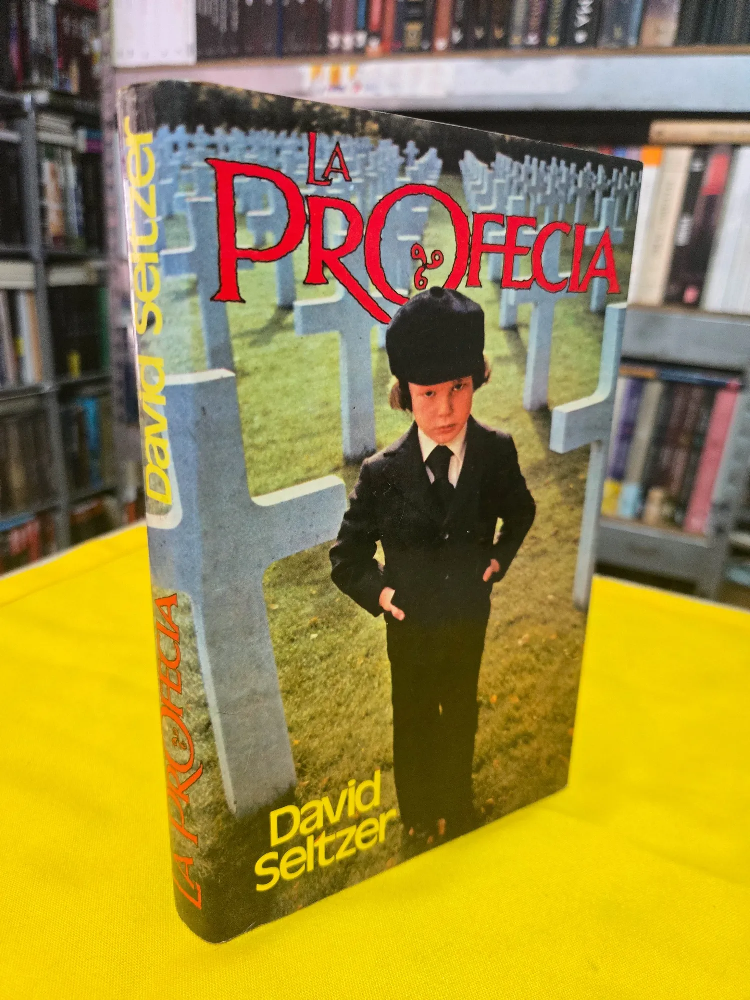

La Profecía
Damos la bienvenida a las reseñas de Salvador Flores, quién, además de ser un gran ilustrador, es un lector asiduo y visitante frecuente de Argonáutica. Uno de sus géneros favoritos es el terror, en este texto nos comparte una novela que marcó un parteaguas en la literatura de terror: La profecía.

LA PROFECIA.
Escrita por: David Seltzer.
Publicado Originalmente en: 1976.
Edición en Español por: Editorial Javier Vergara editor, S.A. en 1977.
275 páginas.
¿Puede el anticristo estar entre nosotros bajo la figura de un niño?
Durante los años 90, en mi barrio, primos y amigos nos reuníamos los fines de semana para ver películas en TV abierta. Era nuestro ritual especial. Veíamos maratones compuestos por trilogías o filmes temáticos (acción, misterio, aventura, terror, etc.), incluídas algunas de los años 70, una década en la que se filmaron grandes películas de terror que se convertirían en clásicos y referentes del terror moderno. Entre mis favoritas está la trinidad compuesta por La Profecía, La semilla del diablo y El exorcista, basadas en sus novelas homónimas, a excepción de La Profecía, una obra original, de la cual, el guionista, David Seltzer, escribiría posteriormente la novela, aunque fue hasta mi adolescencia cuando me enteré que la película que me había impresionado tanto (su melodía, Ave satani, me seguía en mis pensamientos), tenía una novela. En ese tiempo, los 2000, el terror estaba volviéndose más comercial, los efectos especiales comenzaban a quitarle esa sensación de realidad para presentarnos cosas imposibles, además de que fue una década en la que llegaron los “remakes”.
En el 2006, de la mano de John Moore, tuvimos una nueva entrega de La Profecía (la original fue estrenada en 1976), prometía refrescar la mítica película que cargaba fama de maldita luego de una serie de hechos perturbadores que ocurrieron a distintos miembros del equipo de producción, fue sonado que el avión en el que viajaba el guionista fue alcanzado por un rayo. Días después el actor Gregory Peck, viajando en un avión, también recibió el impacto de un rayo; durante la filmación los babuinos del zoológico atacaron el automóvil donde se encontraban los actores y los perros utilizados en la película atacaron a sus entrenadores. Un entrenador de animales fue muerto por un león (o tigre, según otras fuentes), Mace Neufeld, productor, sufrió un accidente poco después de las escenas en Israel. La responsable de los efectos especiales murió poco después de terminar la filmación en circunstancias que se dicen parecidas a la famosa escena de decapitación. En cuanto al remake, basta decir que se quedó corto de acuerdo a la crítica pero logrando éxito comercial, abriendo el debate que aún existe sobre los remakes, ¿eran necesarios o nada más se hacían para ganar dinero?
Era irónico que dentro de toda esa novedad la vieja profecía de los setentas siguiera pareciéndome mejor que las cosas que se hacían para entonces, así que me propuse leerla para ampliar mis pesadillas (amo el terror). En ese entonces, que Internet se estaba abriendo al mundo, un amigo me recomendó una librería en línea con un gran catálogo, resultó que tenían un ejemplar en pasta dura de la editorial Javier Vergara en buenas condiciones. ¡Me puse muy feliz! hasta que me enteré que hablaba con una librería en España, de nombre Alcana, y los precios estaban en euros, ¡EN EUROS! Pedí otros libros para que valiera la pena el precio del envío. Un par de meses después tenía el libro en mis manos.
La novela adapta de manera excelente la película que en mi niñez me impresionó tanto. Comienza con la noticia que le dan a Robert Thorn (diplomático norteamericano), de que su hijo nació muerto. Preocupado por el estado de su esposa, quien, luego de varios abortos conserva el anhelo de tener un hijo. Para evitar su dolor y sin que su mujer se entere, adopta un niño huérfano nacido en el mismo hospital, a la misma hora. Esta decisión es el detonante de una historia llena de terror y misterio, una carrera por descubrir una verdad oculta en el tiempo. De la pérdida de la esperanza, muertes violentas y una serie de circunstancias peculiares que giran en torno al enigmático niño portador de una terrible profecía.
El terror psicológico se mezcla con un terror sobrenatural no exagerado, al igual que la descripción de las muertes, que impactan por lo inesperado del momento. El lenguaje es sencillo con ritmo y estilo bien detallados.
Los cambios son sutiles respecto a la película. Aporta más desarrollo psicológico de los personajes y mantiene la tensión hasta el final, conserva la atmósfera trágica y nos hace pasar un buen rato de terror, pesar y tristeza.
Cuenta con ediciones en pasta dura y blanda de la editorial Javier Vergara. Recientemente Minotauro sacó una edición en su sello de clásicos en el 2015. Son todas las ediciones en español que existen de este libro.
No se sabe si David Seltzer la tenía pensada como una novela desde el principio o si a raíz del éxito de su guión quiso novelarla.
Al igual que la película, el libro es de suma importancia para los amantes del género, sienta las bases para lo que llamaríamos posteriormente terror moderno, innovando en la temática del terror religioso y en poner como personaje principal a un niño, cosa que preocupó a la iglesia y a las asociaciones de buenas conductas y ética en la familia. Pero no es solo eso por lo que vale, el manejo del ritmo, los escenarios, el thriller psicológico y las muertes bien narradas, así como la tensión de las escenas, complementan de forma equilibrada la obra. No necesitó exagerar los elementos sobrenaturales para que el lector sienta miedo a aquello que no entendemos y, sobre todo, a la manifestación del mal.
Los puntos malos suelen mencionar que su escritura se asemeja a un guión, aunque a mi parecer, es una crítica que se hace por la comparación directa con la película, algo entendible tanto por ser fiel al mismo material, como que el autor también escribió el guión. La idea de la secta no se desarrolla completamente en esta primera novela, cosa que cambia conforme avanza la historia en subsecuentes entregas (dos volúmenes más que adaptan las películas de la trilogía). La temática es simple, pero conforme avanza, se enriquece con la cultura de la época y los mitos bíblicos que se van descubriendo.
Algunos elementos son mejores en la narración, como el paseo en el zoológico o el desarrollo del personaje de la señora Baylock.
Leerla, es estar frente a una obra que redefinió el género, una historia enfocada en la época actual, con elementos de los grandes escritores de esta temática, como H. P. Lovecraft, Robert Bloch, Ambrose Bierce, Arthur Machen, Clarck Asthon Smith, entre otros.
El Navegante Literario:

Chava Flores. Amante de la literatura, el dibujo y la pintura, defensor de la palabra y las buenas historias. A veces perdido en el insondable mar de la imaginación, entre tantos referentes se desborda su pasión. Habitante de reinos fantásticos, perturbadores, históricos y poéticos.
Café La Fauna es un lugar para compartir un buen momento tomando café, comiendo o buscando libros en Argonáutica, su sala de lectura. Visítala en Morrow 8, Cuernavaca Centro.